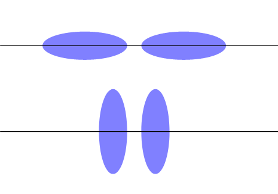
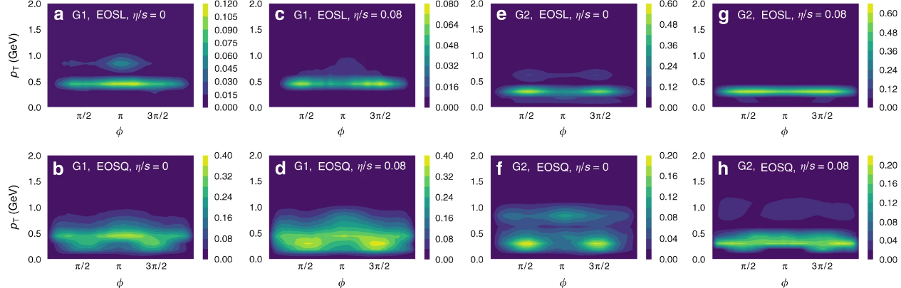
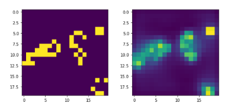

|
V. Aswin This document was born out of prepration for my masters thesis. It is not an original work, but a compilation of scribed notes of courses I have taken and extracts from books and papers I read over time. |
|  |
V. Aswin A deep Convolutional Neural Network to classify initial collision configuration of deformed nuclei. |
|  |
V. Aswin PapersWithCode This is an implementation of the DL pipelines related to the paper, " An equation-of-state-meter of quantum chromodynamics transition from deep learning " by Long-gang Pang et.al. |
|  |
V. Aswin Predicting the initial state(5th time step) of Conway's Game of Life using a final state of the game using Deep Learning. The data used was downloaded from a Kaggle. |
|
V. Aswin A naive implementation of conwway's game of life with unix/linux terminal specific visualization. |
|
V. Aswin Simulation of the 2-dimensional ising model using metropolis algorithm. The pseudo random number generator is Mersene Twister. |